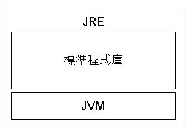

來看看第一個Java程式：
public class HelloWorld {
public static void main(String[] args) {
System.out.println("Hello World!");
}
}
public static void main(String[] args) {
System.out.println("Hello World!");
}
}
這段程式執行的動作是請作業系統（System）的標準輸出（out）顯示一行文字（println）叫"Hello World!"。物件導向程式好懂的地方在於，它模擬真實世界中的事物，可以像這樣看著程式講出一段故事。
對Java 程式來說，JVM是它唯一認得的作業系統，如果要在JVM上執行程式，一定得定義並編譯出一個可執行程式，這個可執行程式的副檔名是.class。例如你 的Hello World程式要執行，就是在JVM上執行HelloWorld.class這個JVM的可執行檔。
在程式中，使用到System這個程式，但你沒有寫過System並編譯為System.class，這個程式哪裡來的？其實就是在JRE（Java Runtime Environment）中已經有提供的程式。
那麼，為什麼不這麼寫呢？
OS.out.show("Hello World!");
或者是這麼寫呢？
Platform.out.writeLine("Hello World!");
如果每個JRE提供的程式庫中各程式名稱不統一，例如在這個程式庫中叫OS，那個程式庫中叫Platform，那在這個JRE中寫的程式，一定不能在另一個JRE上執行，如此就不可能完成Java跨平台的任務。
Java不僅僅是個語言，更是一個標準。當製訂API時，有興趣的各大廠商提出自己的API，最後大家得一起投票，決定最後的API名稱等規格，而後各大廠再去實作API，也因此，在這個JRE中所提供的程式庫，才能保證在另一個JRE也有提供，這些大廠們共同製定的API，就是所謂的標準程式庫，或叫作Java SE API。
Java程式會引用標準程式庫，並執行在JVM這個唯一認識的系統之上，這樣才能達到跨平台的目的。標準程式庫及JVM，都包含在JRE之中。所以Java程式要能夠執行在電腦中，就必須安裝JRE。如果你的程式有引用到標準程式庫，就直接由JRE提供，而所有的程式（包括自定義的程式與標準程式庫提供的程式）是執行在JVM上。

實際上，JRE還包括了部署（Deployment）技術，也就是如何將你的程式安裝到客戶端的技術，我不打算討論這個。完整的Java SE平台示意圖，可以在這邊找到：http://java.sun.com/javase/technologies/index.jsp。
在那張圖中，可以看到，JRE包括了部署技術、Java SE API（也就是標準程式庫）以及JVM。提供的標準程式庫，包括了寫視窗時會用到的AWT、Swing，畫圖用的Java 2D，寫資料庫時的JDBC等。那張圖很好用，滑鼠移上去後，會反白的主題表示有鏈結可以按下，按下去就是該主題的文件說明，可以善加利用。